Local Lens
Rise Up
Bucket List
Tru-ly Unique

Unplugged
Local LensExperiences
See the destination through local eyes

Cook with a local family

Local market tours
Direct connections with local culture, traditions, and communities. Cooking with families, exploring neighbourhoods with locals, and participating in generational cultural practices.
- Cook pad thai with a Bangkok family
- Explore Hoi An with a local artisan
Rise UpExperiences
Step beyond comfort and discover what you’re capable of

Sunrise summit treks

Jungle treks
Intentional challenges — physical, mental, or emotional — in supportive settings. Summit hikes, independent navigation, and experiences that push your limits.
- Sunrise summit trek up Mount Batur
- White water rafting in La Fortuna